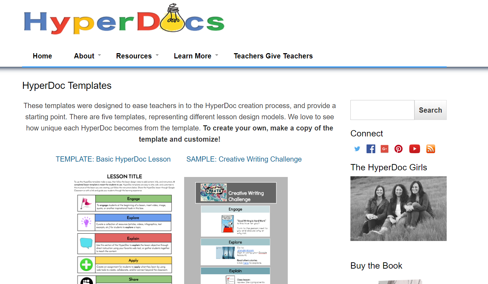
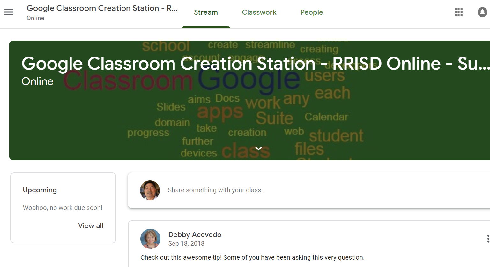
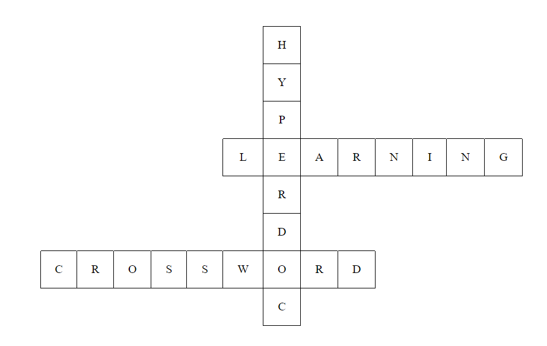

article 1 hyperdoc Hyperdoc is a document which has hyperlinks like Google doc or Google
Slide. Students go to a hyperdoc and work on their copy of the document
and submit their copy after completing a task assigned to them. The
document has hyperlinks that lead students to additional pictures or
presentations. Students can also add their own pictures in the document
to show teacher pictures. Hyperdoc helps students more focused on
learning and helps them have more responsibility for learning.

article 2 About Google Classroom
Google Classroom is a good framework that includes several tools in it.
Assignments and presentations and sometimes quizzes are laden and
administered in Google Classroom. Hyperdoc is used with Google Classroom
because students open the document in Google Classroom, and submit their
results into Google Classroom. Teacher also gives them grade in Google
Classroom with comments. I use this tool for all my teaching subjects.

article 3 Online Crossword Puzzle
Crossword puzzle is one of the vocabulary words learning tools. This
tool seems to help students memorize and remember new vocabulary words.
They can use flash cards to study vocabulary words. For a review
crossword puzzle works well. It is, however, of limited use because it
is hard for teachers to make crossword puzzles on their own. There are
some online crossword puzzle makers but they charge. Teachers are
reluctant to use them paying fee for it, because they don't use them
often. If there is online crossword puzzle maker available for desktop
and mobile for free, it would help teachers and students a lot.